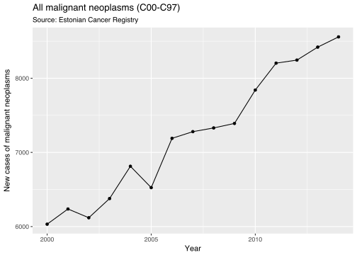
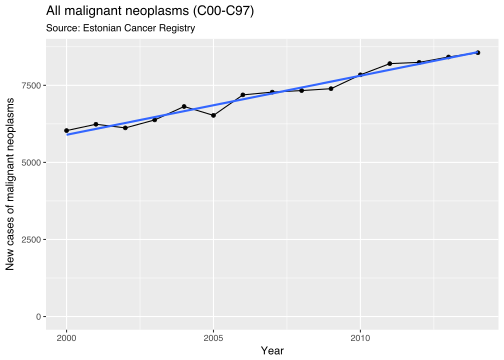
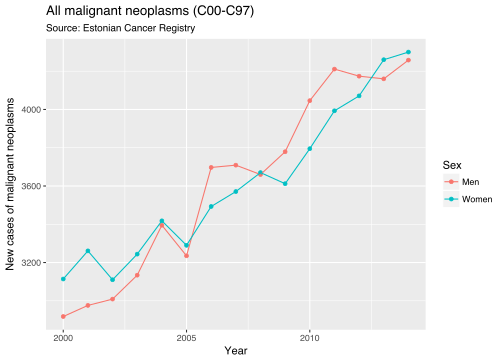
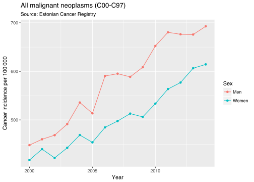
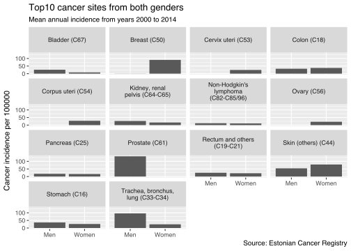
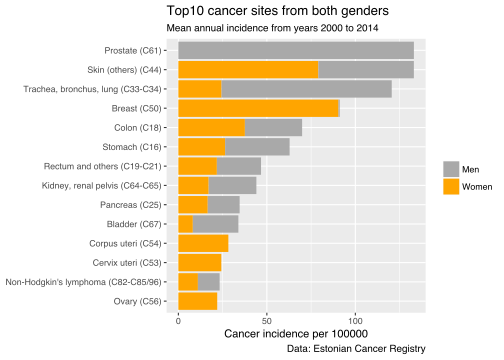
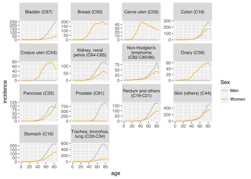
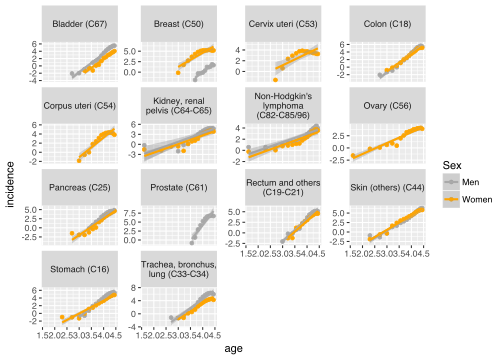
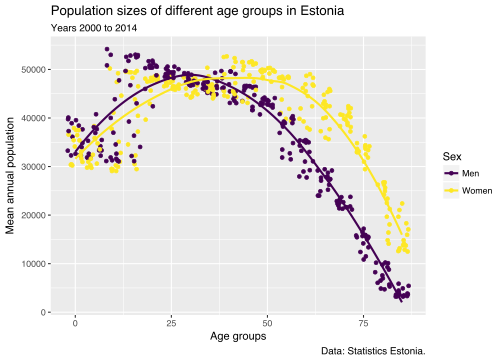
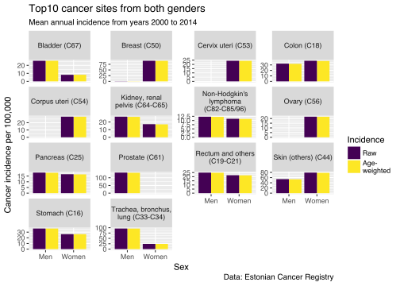

Exploratory data analysis – Estonian cancer data
Taavi Päll
- Sept. 2017
Introduction
Cancer and specially lung cancer is becoming one of the leading causes of mortality. In year 2012. cancer claimed 8.2 million lives worldwide, European Union had 15% share (1.27 million). Most cancer deaths are caused by lung-, liver-, stomach-, colorectal-, and breast cancer. Most frequent cancer types are different in females and males. Predictions show that cancer incidence increases from 14 million in 2012. to 22 million in 2030-ties.
Vähkkasvajad on maailmas üks juhtivatest surma põhjustatavatest haigustest, nõudes 8.2 miljonit elu 2012. aastal, sealhulgas on EU-27 osakaal 2012. aastal 1.27 miljonit ehk 15%. Kopsu-, maksa-, mao-, kolorektaal- ja rinnakasvajad põhjustavad enim vähisurmasid. Sagedasemad vähitüübid on naistel ja meestel erinevad. Ennustatakse et haigestumus suureneb maailmas 14 miljonilt 2012. aastal 22 miljonini 2030-ndatel.
EDA
Exploratory data analysis is iterative process (Wickham and Grolemund 2017) where you:
Generate questions about your data.
Search for answers by visualising, transforming, and modelling your data.
Use what you learn to refine your questions and/or generate new questions.
Andmeanalüüs on iteratiivne protsess, kus:
Esitatakse esialgsed küsimused millele soovitakse antud andmete põhjal vastuseid;
Proovitakse neile küsimustele vastuseid leida, kasutades andmete visualiseerimit, transformeerimist ja modelleerimist;
Andmete põhjal saadud uute teadmiste najal täpsustatakse esitatavaid küsimusi ja tekivad uued küsimused (Wickham and Grolemund 2017).
Questions
By using cancer incidence data from Estonian Cancer Registry we want to understand:
What is the cancer incidence trend in Estonia?
What are the most frequent cancer sites?
What is the most frequent cancer type in men and in women?
When doing data analysis 80% of time will be spent on data wrangling where you also become familiar with your dataset. So it’s time well spent.
You must be aware that when looking at your data and searcing for something interesting is multiple hypothesis testing and you need to adjust your expectations.
Cancer data from Estonian cancer registry
Estonian cancer registry data is available via Health statistics and health research database. We are using cancer incidence dataset from table “PK10: New cases of malignant neoplasms by specified site, sex and age group”.
Detailed information about variables in this dataset can be found from here.
Screen caption from dataset download page. Note that data was downloaded in JSON format.
For your convenience, we have downloaded this dataset into “rstats-tartu/datasets” GitHub repo.
Create RStudio project
Create RStudio project from GitHub repo. First, create GitHub repo and call it eda_demo. Second, clone this repo into RStudio project. Detailed instructions can be found here.
Download cancer incidence dataset from GitHub
Download “cancer_incidence_PK10.json” file from “rstats-tartu/datasets” GitHub repo:
url <- "https://raw.githubusercontent.com/rstats-tartu/datasets/master/cancer_newcases_PK10.json"
dir.create("data")## Warning in dir.create("data"): 'data' already existsdownload.file(url, "data/cancer_newcases_PK10.json")Import and prepare data
First we load “tidyverse” library. We are going to need also “stringi” and “stringr” libraries for string manipulation (you guess correctly, stringr is based on stringi). “broom” package converts S3 model object into dataframes for tidy handling.
library(tidyverse)
library(stringi)
library(stringr)Then we import dataset using json_to_df() function from “boulder” library.
You can install “boulder” from GitHub “tpall/boulder”: “boulder” package has few helper functions and was created to work specificly with Estonian Health Statistics and Health Research Database. However, “boulder” package is still under development and you should use it carefully.
Install “boulder” package if not installed, you need also “devtools” library to install package from GitHub:
# install.packages("devtools")
if(!"boulder" %in% installed.packages()){
devtools::install_github("tpall/boulder")
}Import dataset
library(boulder)
incidence <- json_to_df("data/cancer_newcases_PK10.json")## Data source is Estonian Cancer Registry.incidence## # A tibble: 2,190 x 24
## Year
## <fctr>
## 1 2000
## 2 2000
## 3 2000
## 4 2000
## 5 2000
## 6 2000
## 7 2000
## 8 2000
## 9 2000
## 10 2000
## # ... with 2,180 more rows, and 23 more variables: `Specified
## # site` <fctr>, Sex <fctr>, `0-4` <int>, `5-9` <int>, `10-14` <int>,
## # `15-19` <int>, `20-24` <int>, `25-29` <int>, `30-34` <int>,
## # `35-39` <int>, `40-44` <int>, `45-49` <int>, `50-54` <int>,
## # `55-59` <int>, `60-64` <int>, `65-69` <int>, `70-74` <int>,
## # `75-79` <int>, `80-84` <int>, `85 and older` <int>, label <chr>,
## # source <chr>, updated <chr>We have columns “Year”, “Specified site”, “Sex”, age groups from “0-4” to “85 and older”, “label”, “source”, “update”.
“Specified site” indicates the anatomical site of the cancer followed by ICD-10 code in parentheses (there is ICD-10 code for “Burned when water skis caught on fire: Y91.07XA” or “V97.33XD Sucked into jet engine, subsequent encounter”).
For better overview let’s filter out “Specified site” values that are longer than 30 characters.
filter(incidence, str_length(`Specified site`) < 30)## # A tibble: 1,110 x 24
## Year `Specified site` Sex `0-4` `5-9` `10-14` `15-19`
## <fctr> <fctr> <fctr> <int> <int> <int> <int>
## 1 2000 ..Lip (C00) Men 0 0 0 0
## 2 2000 ..Lip (C00) Women 0 0 0 0
## 3 2000 ..Tongue (C01-02) Men 0 0 0 0
## 4 2000 ..Tongue (C01-02) Women 0 0 0 0
## 5 2000 ..Nasopharynx (C11) Men 0 0 0 0
## 6 2000 ..Nasopharynx (C11) Women 1 0 0 0
## 7 2000 Digestive organs (C15-C26) Men 1 0 0 0
## 8 2000 Digestive organs (C15-C26) Women 0 0 0 0
## 9 2000 ..Oesophagus (C15) Men 0 0 0 0
## 10 2000 ..Oesophagus (C15) Women 0 0 0 0
## # ... with 1,100 more rows, and 17 more variables: `20-24` <int>,
## # `25-29` <int>, `30-34` <int>, `35-39` <int>, `40-44` <int>,
## # `45-49` <int>, `50-54` <int>, `55-59` <int>, `60-64` <int>,
## # `65-69` <int>, `70-74` <int>, `75-79` <int>, `80-84` <int>, `85 and
## # older` <int>, label <chr>, source <chr>, updated <chr>Year, Specified site and Sex are factors. We convert Year to numeric and “Specified site” and Sex to character using parse_ functions from “readr” package.
## Year to numeric
incidence <- incidence %>% mutate_at("Year", parse_number)
## Site and Sex to character
incidence <- incidence %>% mutate_at(c("Specified site", "Sex"), parse_character)
incidence## # A tibble: 2,190 x 24
## Year `Specified site`
## <dbl> <chr>
## 1 2000 All malignant neoplasms (C00-C97)
## 2 2000 All malignant neoplasms (C00-C97)
## 3 2000 All malignant neoplasms except skin (other) (C00-C97, except C44)
## 4 2000 All malignant neoplasms except skin (other) (C00-C97, except C44)
## 5 2000 Lip, oral cavity and pharynx (C00-C14)
## 6 2000 Lip, oral cavity and pharynx (C00-C14)
## 7 2000 ..Lip (C00)
## 8 2000 ..Lip (C00)
## 9 2000 ..Tongue (C01-02)
## 10 2000 ..Tongue (C01-02)
## # ... with 2,180 more rows, and 22 more variables: Sex <chr>, `0-4` <int>,
## # `5-9` <int>, `10-14` <int>, `15-19` <int>, `20-24` <int>,
## # `25-29` <int>, `30-34` <int>, `35-39` <int>, `40-44` <int>,
## # `45-49` <int>, `50-54` <int>, `55-59` <int>, `60-64` <int>,
## # `65-69` <int>, `70-74` <int>, `75-79` <int>, `80-84` <int>, `85 and
## # older` <int>, label <chr>, source <chr>, updated <chr>We can see that number of new cancer cases is available from years 2000 to 2014 for both sexes, 18 age groups and 1 different types of cancer sites …
Hold on… This table has data intermingled with summary data – cases of specific cancer types are next to total cases – , that’s bad!
Year Site Sex
<fctr><fctr> <fctr>
2000 All malignant neoplasms (C00-C97) Men <- tallies
2000 All malignant neoplasms (C00-C97) Women <- tallies
2000 All malignant neoplasms except skin (other) (C00-C97, except C44) Men <- tallies
2000 All malignant neoplasms except skin (other) (C00-C97, except C44) Women <- tallies
2000 Lip, oral cavity and pharynx (C00-C14) Men <- tallies
2000 Lip, oral cavity and pharynx (C00-C14) Women <- tallies
2000 ..Lip (C00) Men
2000 ..Lip (C00) Women
2000 ..Tongue (C01-02) Men
2000 ..Tongue (C01-02)Summaries are provided for different range of ICD10 codes e.g. “(C00-C97)” covers all types of cancer.
Here we are not going to do fix this, but we must keep this in mind when summarising data.
Additionally, we have three metadata columns in dataset called “label”, “source” and “updated”.
- Variable “label” says what the values are,
- “source” gives us info about data origin and
- “updated” is the date of the last update.
Because these three seem to be constants in our table, we want to place them into separate objects for later use in plot annotation.
## keep label and source in a separate variables
label <- unique(incidence$label)
data_source <- unique(incidence$source)
updated <- unique(incidence$updated)
label## [1] "New cases of malignant neoplasms"data_source## [1] "Estonian Cancer Registry"updated## [1] "2015-06-18T08:31:00Z"Table metadata shows that values are new cases of malignant neoplasms and originate from Estonian Cancer Registry and were last time updated in 2015-06-18.
We also want to trim those offending dots from beginning of “Specified site” names and rename “Specified site” into something more convenient, like “Site”.
We use stri_trim_left() from “stringi” to trim all characters from the beginning of strings until first alphabetic character (?regex). Finally, to exclude table metadata constants, we use select() from “dplyr”.
## Trim characters from `Specified site` until first [[:alpha:]],
## we rename `Specified site` and constant columns from table
incidence <- mutate(incidence,
Site = stri_trim_left(`Specified site`, "[[:alpha:]]")) %>%
select(-`Specified site`, -label, -source, -updated)Table is in the wide format, we want to convert it into long/tidy format and filter out missing data.
Reshape data. Values are in the age group columns. We try to reshape table such as the age groups go into “age” column and values will be in the column called “cases”. We use gather() from “tidyr” library to bring age group values into one column and cases values into the other. Here we also need to supply the names of the value columns, otherwise gather() will put all categorical variables into the key column and all numeric values into value column.
## Let's look what happens when we run gather on our data
gather(incidence)## # A tibble: 45,990 x 2
## key value
## <chr> <chr>
## 1 Year 2000
## 2 Year 2000
## 3 Year 2000
## 4 Year 2000
## 5 Year 2000
## 6 Year 2000
## 7 Year 2000
## 8 Year 2000
## 9 Year 2000
## 10 Year 2000
## # ... with 45,980 more rowsNot what we want!
It might not be always clear what
gather()result will look like, you might need several iterations to get expected result.
Select columns cleverly. Cancer cases data is in the age groups columns are labelled from 0-4 to 85 and older, we need to supply the names of these columns to gather().
We can do this by supplying the names of all 18 age group columns to function (risking with typos and we need to backquote these names because of dash characters) or we can do this in the smart way.
“dplyr” has select helper functions ?select_helpers to select columns based on patterns in their names.
One such function is matches(): matches a regular expression (?regex). Here we need to match columns with numbers in their names. Regular expression matching zero or more numbers is "[[:digit:]]+".
Let’s run test first using character vector of column names:
colnames(incidence)## [1] "Year" "Sex" "0-4" "5-9"
## [5] "10-14" "15-19" "20-24" "25-29"
## [9] "30-34" "35-39" "40-44" "45-49"
## [13] "50-54" "55-59" "60-64" "65-69"
## [17] "70-74" "75-79" "80-84" "85 and older"
## [21] "Site"colnames(incidence) %>% matches("[[:digit:]]+", vars = .)## [1] 3 4 5 6 7 8 9 10 11 12 13 14 15 16 17 18 19 20We can see that “[[:digit:]]+” matches columns 4 to 21. Seems like it works!
Here we use gather() to collect age group columns selected by matches("[[:digit:]]+") into columns “age” and “cases”.
## Values are in the age group columns
incidence_long <- gather(data = incidence,
key = "age",
value = "cases",
matches("[[:digit:]]+"))
incidence_long## # A tibble: 39,420 x 5
## Year Sex
## <dbl> <chr>
## 1 2000 Men
## 2 2000 Women
## 3 2000 Men
## 4 2000 Women
## 5 2000 Men
## 6 2000 Women
## 7 2000 Men
## 8 2000 Women
## 9 2000 Men
## 10 2000 Women
## # ... with 39,410 more rows, and 3 more variables: Site <chr>, age <chr>,
## # cases <int>Now we have each value on separate row and can filter out missing values. Currently missing values are explicitly labeled with NA-s. Function complete.cases() gives logical vector indicating rows with no missing values (no NA-s). Based on this logical vector, filter() then keeps only TRUE rows.
## Filter out missing data,
incidence_long <- incidence_long %>% filter(complete.cases(.))
## above is same as:
## filter(cases_long, complete.cases(cases_long))
## omit.na(incidence_long)Before filtering missing values table had 39420 rows and after 39420. Looks that we don’t have any NA in our table!
That’s all with data wrangling for now!
Cancer trend in Estonia
It’s quite simple, we have already summary data available in our table under variable called “All malignant neoplasms (C00-C97)” in Site column. We plot this variable versus Years and for begginning we lump together men and women:.
total_cases_per_year <- incidence_long %>%
filter(Site == "All malignant neoplasms (C00-C97)") %>%
group_by(Year) %>%
summarise(total_cases = sum(cases))
total_cases_per_year## # A tibble: 15 x 2
## Year total_cases
## <dbl> <int>
## 1 2000 6032
## 2 2001 6237
## 3 2002 6119
## 4 2003 6378
## 5 2004 6813
## 6 2005 6525
## 7 2006 7190
## 8 2007 7280
## 9 2008 7330
## 10 2009 7391
## 11 2010 7841
## 12 2011 8204
## 13 2012 8245
## 14 2013 8420
## 15 2014 8558## We direct plot to an object, then we can reuse it
p <- total_cases_per_year %>%
ggplot(aes(Year, total_cases)) +
geom_point() +
geom_line() +
ylab(str_wrap(label, width = 40)) +
ggtitle("All malignant neoplasms (C00-C97)",
subtitle = paste("Source:", data_source))
p
We can see that cancer cases are skyrocketing.
To better examplify this trend, we can add linear model fit to the plot using geom_smooth() function from “ggplot2”. It is also good idea to start y-axis from 0 in order to decrease lie factor – we might perceive trend larger than it actually is.
We created ggplot object “p” in the previous code chunk, we can modify this ggplot object by adding new geoms:
p +
geom_smooth(method = "lm", se = FALSE) +
expand_limits(y = 0)
Ok, trend is increasing, but how much increase have we seen compared 2014 to 2000?
total_cases_per_year %>%
filter(Year %in% c(2000, 2014)) %>%
knitr::kable(col.names = c("Year", "Number of total cases"))| Year | Number of total cases |
|---|---|
| 2000 | 6032 |
| 2014 | 8558 |
How many percent?
total_cases_per_year %>%
filter(Year %in% c(2000, 2014)) %>%
summarise(perc_increase = sprintf("%1.0f%%", (1 - total_cases[Year==2000]/total_cases[Year==2014])*100))## # A tibble: 1 x 1
## perc_increase
## <chr>
## 1 30%Is the number of cases similar in males and females? Again, we look on the all types of cancer, but split dataset by Sex:
## summarise data per Year and Sex
total_cases_per_year_sex <- incidence_long %>%
filter(Site == "All malignant neoplasms (C00-C97)") %>%
group_by(Year, Sex) %>%
summarise(total_cases = sum(cases))
## Plot this new summary
total_cases_per_year_sex %>%
ggplot(aes(Year, total_cases, color = Sex)) +
geom_point() +
geom_line() +
ylab(label) +
ggtitle("All malignant neoplasms (C00-C97)",
subtitle = paste("Source:", data_source))
We can see that cancer prevalence seems to be similar in both gender – the number of female and male cancer patients is similar. We might have some prior information, that there are more women than men in population. The question arises whether men and women still get cancer at the same rate?
So we have seen increasing numbers of new cases each year during 2000 and 2014. Do we have more cancer or does this reflects increase in population size?
To answer these question, we need population size normalised values of cancer cases – incidence. Cancer incidence is obtained by dividing cancer prevalence with population size.
incidence = (number of cases / mean annual population) * 100000
Vähi intsidents on uute mingit tüüpi vähijuhtude arv aastas vastavas populatsioonis. Uute juhtude arv võib sisaldada mitmeid ühelt patsiendilt leitud primaarseid vähikoldeid. Primaarne vähisait on see kustkohas see vähk algselt on tekkinud, mitte metastaas. Intsidents ei sisalda tagasi tulnud vähke. Populatsiooni suurus sõltub missugusele kasvajale või kasvajagrupile intsidentsi arvutatakse. Kui näiteks arvutatakse emakakaela vähi intsidentsi, siis kasutatakse ainult naiste populatsiooni suurust.
Vanusrühmade suuruse suhtes kaalutud intsidents ehk vanuskordajad arvutatakse kaalutud keskmise meetodil, kus kaalud saadakse vanuserühmade suurusest.
Vanuserähmade suuruse suhtes kaalutud vähi intsidents
Vähi vanuskordajate arvutamiseks on meil puudu populatsioonisuurused.
We obtained mean annual population data from Statistics Estonia. You can download this dataset from “rstats-tartu/datasets” repo.
Download population data into our projects “data” subfolder:
if(!file.exists("data/mean_annual_population.csv")){
download.file("https://raw.githubusercontent.com/rstats-tartu/datasets/master/mean_annual_population.csv", "data/mean_annual_population.csv")
}Import mean annual population data.
## Read in data
pop <- read_csv("data/mean_annual_population.csv")## Parsed with column specification:
## cols(
## .default = col_integer(),
## Sex = col_character()
## )## See spec(...) for full column specifications.pop## # A tibble: 94 x 21
## Sex Year `0` `1-4` `5-9` `10-14` `15-19` `20-24` `25-29` `30-34`
## <chr> <int> <int> <int> <int> <int> <int> <int> <int> <int>
## 1 Men 1970 10315 39493 51950 51417 53084 53787 47058 55210
## 2 Men 1971 11008 40589 51387 52276 53190 56042 45176 56373
## 3 Men 1972 11149 42371 50441 53196 53286 57535 45007 56006
## 4 Men 1973 10889 43778 49961 53545 53861 58084 47523 53213
## 5 Men 1974 10757 44504 50093 53287 54508 57978 51560 49706
## 6 Men 1975 10877 44778 50826 52456 55127 58244 55310 46561
## 7 Men 1976 10929 44601 52426 51348 55631 58850 57584 44378
## 8 Men 1977 11079 44326 54237 50155 55903 59217 58757 44123
## 9 Men 1978 11032 44416 55384 49553 55806 59620 59224 46277
## 10 Men 1979 11028 44626 55816 49927 55368 59309 59246 49727
## # ... with 84 more rows, and 11 more variables: `35-39` <int>,
## # `40-44` <int>, `45-49` <int>, `50-54` <int>, `55-59` <int>,
## # `60-64` <int>, `65-69` <int>, `70-74` <int>, `75-79` <int>,
## # `80-84` <int>, `85 and older` <int>We can see that population size data is in wide format and we have separate columns for age groups “0” and “1-4” that we don’t have in our cancer data. In cancer data we have age group “0-4” instead.
We need to summarise age groups “0” and “1-4” into “0-4”, drop “0” and “1-4” and then convert table to long format using gather().
## Summarise 0 and 1-4 to 0-4 age group, keep only the latter
pop_long <- mutate(pop, "0-4" = `0` + `1-4`) %>%
select(-`0`, -`1-4`) %>%
gather("age", "ave_pop", matches("^[[:digit:]]"))
pop_long## # A tibble: 1,692 x 4
## Sex Year age ave_pop
## <chr> <int> <chr> <int>
## 1 Men 1970 5-9 51950
## 2 Men 1971 5-9 51387
## 3 Men 1972 5-9 50441
## 4 Men 1973 5-9 49961
## 5 Men 1974 5-9 50093
## 6 Men 1975 5-9 50826
## 7 Men 1976 5-9 52426
## 8 Men 1977 5-9 54237
## 9 Men 1978 5-9 55384
## 10 Men 1979 5-9 55816
## # ... with 1,682 more rowsMerge cancer cases with population size data. Note that population values only from years 2000 to 2014 will be merged to incidence_long.
incidence_long <- left_join(incidence_long, pop_long)## Joining, by = c("Year", "Sex", "age")incidence_long## # A tibble: 39,420 x 6
## Year Sex
## <dbl> <chr>
## 1 2000 Men
## 2 2000 Women
## 3 2000 Men
## 4 2000 Women
## 5 2000 Men
## 6 2000 Women
## 7 2000 Men
## 8 2000 Women
## 9 2000 Men
## 10 2000 Women
## # ... with 39,410 more rows, and 4 more variables: Site <chr>, age <chr>,
## # cases <int>, ave_pop <int>Cancer incidence is presented as new cases per 100’000. Now we have number of new cases and population size side-by-side and can go on to calculate cancer incidence per 100’000 inhabitans:
incidence_year_sex <- incidence_long %>%
group_by(Site, Year, Sex) %>%
summarise(cases = sum(cases),
ave_pop = sum(ave_pop)) %>%
mutate(incidence = (cases / ave_pop) * 100000)
## we selected less columns for viewing
select(incidence_year_sex, Site, Year, incidence, everything())## # A tibble: 2,190 x 6
## # Groups: Site, Year [1,095]
## Site Year incidence Sex cases
## <chr> <dbl> <dbl> <chr> <int>
## 1 Acute lymphoblastic leukaemia (C91.0) 2000 0.7679607 Men 5
## 2 Acute lymphoblastic leukaemia (C91.0) 2000 0.9384510 Women 7
## 3 Acute lymphoblastic leukaemia (C91.0) 2001 0.6185392 Men 4
## 4 Acute lymphoblastic leukaemia (C91.0) 2001 1.0789960 Women 8
## 5 Acute lymphoblastic leukaemia (C91.0) 2002 1.5572807 Men 10
## 6 Acute lymphoblastic leukaemia (C91.0) 2002 0.5425899 Women 4
## 7 Acute lymphoblastic leukaemia (C91.0) 2003 1.5680863 Men 10
## 8 Acute lymphoblastic leukaemia (C91.0) 2003 1.3642565 Women 10
## 9 Acute lymphoblastic leukaemia (C91.0) 2004 1.1048329 Men 7
## 10 Acute lymphoblastic leukaemia (C91.0) 2004 0.8230791 Women 6
## # ... with 2,180 more rows, and 1 more variables: ave_pop <int>Let’s see if we got correct number by comparing our incidence numbers to ones published in Estonian Health Statistics database:
incidence_year_sex %>%
filter(Site == "All malignant neoplasms (C00-C97)",
Year == 2000) %>%
select(-Site, -cases, -ave_pop) %>%
knitr::kable()## Adding missing grouping variables: `Site`| Site | Year | Sex | incidence |
|---|---|---|---|
| All malignant neoplasms (C00-C97) | 2000 | Men | 448.1819 |
| All malignant neoplasms (C00-C97) | 2000 | Women | 417.4766 |

Cancer incidence values of All malignant neoplasms for year 2000 in Estonian Health Statistics database.
Seems that we are calculating cancer incidence similarly as professional statisticians.
Men get more cancer in Estonia. Clearly, increasing trend for new cancer cases is still visible after normalisation for population size. However, incidence uncovers another important trend, namely, men tend to get more cancer than women in Estonia. While the number of cases per year was similar in men and women, the incidence is higher in men:
total_incidence_year_sex <- incidence_year_sex %>%
filter(Site == "All malignant neoplasms (C00-C97)")
## we give new data to plot and we also must supply aes for Sex
total_incidence_year_sex %>%
ggplot(aes(Year, incidence, color = Sex)) +
geom_point() +
geom_line() +
ylab("Cancer incidence per 100'000") +
ggtitle("All malignant neoplasms (C00-C97)",
subtitle = paste("Source:", data_source))
Is increasing incidence trend comparable to the increase in number of cases? We can try to look at this by calculating percent increase in 2014 compared to 2000.
| Sex | Increase |
|---|---|
| Men | 35% |
| Women | 32% |
We can see that compared to counts of new cases both men and women show even bigger increase in cancer rates in Estonia. Do we get more cancer or do we diagnose more cancer… ?
We can settle that cancer trend in Estonia is worryingly increasing.
What are the most frequent cancer sites?
Let’s have a look at Top10 most frequent cancers. Most frequent cancers are different in men and women.
First, we try to remove some summary variables from table. “boulder” package has adhoc function icd_sums() that tries to id rows that contain summary data over many cancer sites using ICD codes in “Sites” strings.
## boulder has adhoc function that tries to id parent Sites
parent_nodes <- boulder::icd_sums(unique(incidence_long$Site))
parent_nodes## # A tibble: 181 x 2
## Parent
## <chr>
## 1 All malignant neoplasms (C00-C97)
## 2 All malignant neoplasms (C00-C97)
## 3 All malignant neoplasms (C00-C97)
## 4 All malignant neoplasms (C00-C97)
## 5 All malignant neoplasms (C00-C97)
## 6 All malignant neoplasms (C00-C97)
## 7 All malignant neoplasms (C00-C97)
## 8 All malignant neoplasms (C00-C97)
## 9 All malignant neoplasms (C00-C97)
## 10 All malignant neoplasms (C00-C97)
## # ... with 171 more rows, and 1 more variables: Site <chr>Create vector for subsetting:
unique_parents <- unique(parent_nodes$Parent)This can be also achieved by “manually” specifying Site values to be omitted.
Find most frequent cancer sites
We calculate incidence for each Site per Sex, let’s drop Year by taking its average:
incidence_sex_filt <- incidence_year_sex %>%
filter(!Site %in% unique_parents) %>%
group_by(Site, Sex) %>%
summarise(incidence = mean(incidence))
incidence_sex_filt## # A tibble: 120 x 3
## # Groups: Site [?]
## Site Sex incidence
## <chr> <chr> <dbl>
## 1 Acute lymphoblastic leukaemia (C91.0) Men 1.2020502
## 2 Acute lymphoblastic leukaemia (C91.0) Women 1.0957165
## 3 Acute myeloid leukaemia (C92.0) Men 2.8776086
## 4 Acute myeloid leukaemia (C92.0) Women 3.0853415
## 5 Bladder (C67) Men 25.7340246
## 6 Bladder (C67) Women 8.1800575
## 7 Bone and articular cartilage (C40-C41) Men 1.3889258
## 8 Bone and articular cartilage (C40-C41) Women 0.7791062
## 9 Brain (C71) Men 7.4869174
## 10 Brain (C71) Women 6.4476983
## # ... with 110 more rowsList of top10 cancers by Sex:
## list of top10 cancers
listof_top10 <- incidence_sex_filt %>%
group_by(Sex) %>%
top_n(10, incidence) %>%
arrange(desc(incidence))
listof_top10## # A tibble: 20 x 3
## # Groups: Sex [2]
## Site Sex incidence
## <chr> <chr> <dbl>
## 1 Prostate (C61) Men 133.08185
## 2 Trachea, bronchus, lung (C33-C34) Men 96.15237
## 3 Breast (C50) Women 90.47996
## 4 Skin (others) (C44) Women 79.09734
## 5 Skin (others) (C44) Men 53.96362
## 6 Colon (C18) Women 37.59027
## 7 Stomach (C16) Men 36.43324
## 8 Colon (C18) Men 32.33435
## 9 Corpus uteri (C54) Women 28.24725
## 10 Kidney, renal pelvis (C64-C65) Men 26.95186
## 11 Stomach (C16) Women 26.42107
## 12 Bladder (C67) Men 25.73402
## 13 Rectum and others (C19-C21) Men 24.95321
## 14 Trachea, bronchus, lung (C33-C34) Women 24.40774
## 15 Cervix uteri (C53) Women 24.26342
## 16 Ovary (C56) Women 21.94703
## 17 Rectum and others (C19-C21) Women 21.76053
## 18 Pancreas (C25) Men 18.00857
## 19 Kidney, renal pelvis (C64-C65) Women 17.12987
## 20 Non-Hodgkin's lymphoma (C82-C85/96) Men 12.27523Plot most frequent cancers:
incidence_sex_filt %>%
filter(Site %in% listof_top10$Site) %>%
ggplot(aes(Sex, incidence)) +
geom_bar(stat = "identity") + ## use the values that we have in our table
facet_wrap(~ Site, labeller = label_wrap_gen(width = 20)) +
labs(title = "Top10 cancer sites from both genders",
subtitle = "Mean annual incidence from years 2000 to 2014",
y = "Cancer incidence per 100000",
caption = paste("Source:", data_source)) +
theme(axis.title.x = element_blank())
Here is another take using the same data:
incidence_sex_filt %>%
filter(Site %in% listof_top10$Site) %>%
ggplot(aes(reorder(Site, incidence), incidence, fill = Sex)) +
geom_bar(stat = "identity") +
labs(y = "Cancer incidence per 100000",
title = "Top10 cancer sites from both genders",
subtitle = "Mean annual incidence from years 2000 to 2014",
caption = paste("Data:", data_source)) +
coord_flip() +
theme(axis.title.y = element_blank(),
legend.title = element_blank()) +
scale_fill_manual(values = c("darkgray", "orange"))
What these two graphs tell us?
Cancer takes whole life to develop
Which age groups get most cancer? Number of new cases versus incidence.
First, we also make age groups numeric for correct x-axis order.
numeric_agegroup <- function(x) parse_number(str_extract(x, "^[0-9]{1,2}"))
incidence_long <- incidence_long %>% mutate_at("age", numeric_agegroup)
incidence_long## # A tibble: 39,420 x 6
## Year Sex
## <dbl> <chr>
## 1 2000 Men
## 2 2000 Women
## 3 2000 Men
## 4 2000 Women
## 5 2000 Men
## 6 2000 Women
## 7 2000 Men
## 8 2000 Women
## 9 2000 Men
## 10 2000 Women
## # ... with 39,410 more rows, and 4 more variables: Site <chr>, age <dbl>,
## # cases <int>, ave_pop <int>Let’s plot cancer incidence versus age groups.
p <- incidence_long %>%
filter(Site %in% listof_top10$Site) %>%
mutate(incidence = (cases / ave_pop) * 100000) %>%
group_by(Sex, Site, age) %>%
summarise(incidence = mean(incidence)) %>%
ggplot(aes(age, incidence, color = Sex)) +
geom_line() +
facet_wrap(~ Site, labeller = label_wrap_gen(20), scales = "free_y") +
scale_color_manual(values = c("darkgray", "orange"))
p We can see that generally cancer incidence peaks at the age of 60+. There are exeptions, like cervical cancer which has peak incidence in 40 year olds.
Cancer incidence increases with age: use log on x and y axis!
incidence_long %>%
filter(Site %in% listof_top10$Site) %>%
mutate(incidence = cases / (ave_pop/1E5)) %>%
group_by(Sex, Site, age) %>%
summarise(incidence = mean(incidence)) %>%
mutate_at(vars(age, incidence), log) %>%
filter(is.finite(incidence), is.finite(age)) %>%
ggplot(aes(age, incidence, color = Sex)) +
geom_point() +
facet_wrap(~ Site, labeller = label_wrap_gen(20), scales = "free_y") +
scale_color_manual(values = c("darkgray", "orange")) +
geom_smooth(method = "lm")
There are cancer that show linear relationship between age and incidence, like skin cancer and bladder cancer. And there are cancers that initially show increase but then reach plateau, these seem to be mostly gender specific cancers like breast cancer, cervical cancer, and endometrial cancer in women and prostate cancer in men. If you compare breast cancer in women and men, then it seems that they have different mechanism…
Weighted averages
Previous calculation we summarised all age groups to calculate cancer total population incidence. However, age groups in population are of different size and different cancer prevalence.
Let’s try to take into account age-dependent differences in population size when calculating incidence – by population size as weight.
Plot population sizes of different age groups:
## install.packages("viridis")
library(viridis)## Loading required package: viridisLite## Plot age group differences
incidence_long %>%
ungroup() %>%
select(Year, age, Sex, ave_pop) %>%
distinct() %>%
ggplot(aes(age, ave_pop, color = Sex, group = Sex)) +
geom_jitter(jitter = 0.1) +
geom_smooth(method = "loess", se = FALSE) +
labs(title = "Population sizes of different age groups in Estonia",
subtitle = "Years 2000 to 2014",
caption = "Data: Statistics Estonia.",
y = "Mean annual population",
x = "Age groups") +
scale_color_viridis(discrete = TRUE)## Warning: Ignoring unknown parameters: jitter
Let’s calculate age group size weighted incidence values. For comparison, first we recalculate raw incidence and then age-weighted incidence. To calculate raw incidence, we first sum up all cases and population size over age groups. Then we drop Year by calculating mean incidence across years.
## raw incidence
raw_incidence <- incidence_long %>%
group_by(Year, Site, Sex) %>%
summarise(cases = sum(cases),
ave_pop = sum(ave_pop)) %>%
mutate(incidence = (cases / ave_pop) * 100000) %>% ## incidence
group_by(Site, Sex) %>%
summarise(incidence = mean(incidence),
ave_pop = mean(ave_pop))
raw_incidence## # A tibble: 146 x 4
## # Groups: Site [?]
## Site Sex
## <chr> <chr>
## 1 Acute lymphoblastic leukaemia (C91.0) Men
## 2 Acute lymphoblastic leukaemia (C91.0) Women
## 3 Acute myeloid leukaemia (C92.0) Men
## 4 Acute myeloid leukaemia (C92.0) Women
## 5 Adrenal gland (C74) Men
## 6 Adrenal gland (C74) Women
## 7 All malignant neoplasms (C00-C97) Men
## 8 All malignant neoplasms (C00-C97) Women
## 9 All malignant neoplasms except skin (other) (C00-C97, except C44) Men
## 10 All malignant neoplasms except skin (other) (C00-C97, except C44) Women
## # ... with 136 more rows, and 2 more variables: incidence <dbl>,
## # ave_pop <dbl>In order to calculate age-weighted incidence we should follow diferent logic. Here we start by calculating incidence for each data split in our table: Year, Site, Sex, age. Then we go on and calculate mean incidence and average pop size across Years. Then we apply weights and calculate weighted average.
## Age weighted incidence
age_weighted_incidence <- incidence_long %>%
mutate(incidence = (cases / ave_pop) * 100000) %>% ## incidence
group_by(Site, Sex, age) %>% ## calculate mean population size and mean incidence across years
summarise(incidence = mean(incidence),
ave_pop = mean(ave_pop)) %>%
mutate(wt = ave_pop / sum(ave_pop), ## calculate and apply weights
incidence = wt * incidence) %>%
summarise(incidence = sum(incidence), ## calulate weighted average
ave_pop = sum(ave_pop))
age_weighted_incidence## # A tibble: 146 x 4
## # Groups: Site [?]
## Site Sex
## <chr> <chr>
## 1 Acute lymphoblastic leukaemia (C91.0) Men
## 2 Acute lymphoblastic leukaemia (C91.0) Women
## 3 Acute myeloid leukaemia (C92.0) Men
## 4 Acute myeloid leukaemia (C92.0) Women
## 5 Adrenal gland (C74) Men
## 6 Adrenal gland (C74) Women
## 7 All malignant neoplasms (C00-C97) Men
## 8 All malignant neoplasms (C00-C97) Women
## 9 All malignant neoplasms except skin (other) (C00-C97, except C44) Men
## 10 All malignant neoplasms except skin (other) (C00-C97, except C44) Women
## # ... with 136 more rows, and 2 more variables: incidence <dbl>,
## # ave_pop <dbl>Plot results side by side.
bind_rows(list(raw_incidence, age_weighted_incidence), .id = "type") %>%
filter(Site %in% listof_top10$Site) %>%
ggplot(aes(Sex, incidence, fill = type)) +
geom_bar(stat = "identity", position = "dodge") +
facet_wrap(~ Site, labeller = label_wrap_gen(20), scales = "free_y") +
scale_fill_viridis(discrete = TRUE, labels = c("Raw", "Age-\nweighted"), "Incidence") +
labs(y = "Cancer incidence per 100,000",
title = "Top10 cancer sites from both genders",
subtitle = "Mean annual incidence from years 2000 to 2014",
caption = paste("Data:", data_source))
As you can see, these values are in our case virtually similar.
References
Wickham, Hadley, and Garrett Grolemund. 2017. “R for Data Science.” O’Reilly Media. http://r4ds.had.co.nz.